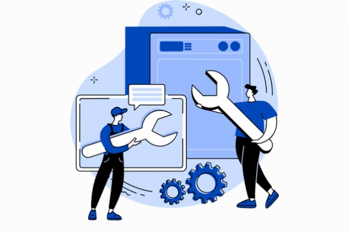

Correctivo

El mantenimiento correctivo es la intervención técnica que se realiza en un equipo, maquinaria o sistema después de que ocurre una falla o averia

El mantenimiento correctivo es la intervención técnica que se realiza en un equipo, maquinaria o sistema después de que ocurre una falla o averia
El mantenimiento preventivo es una revisión programada y proactiva de equipos o instalaciones que se realiza con el fin de garantizar su buen funcionamiento